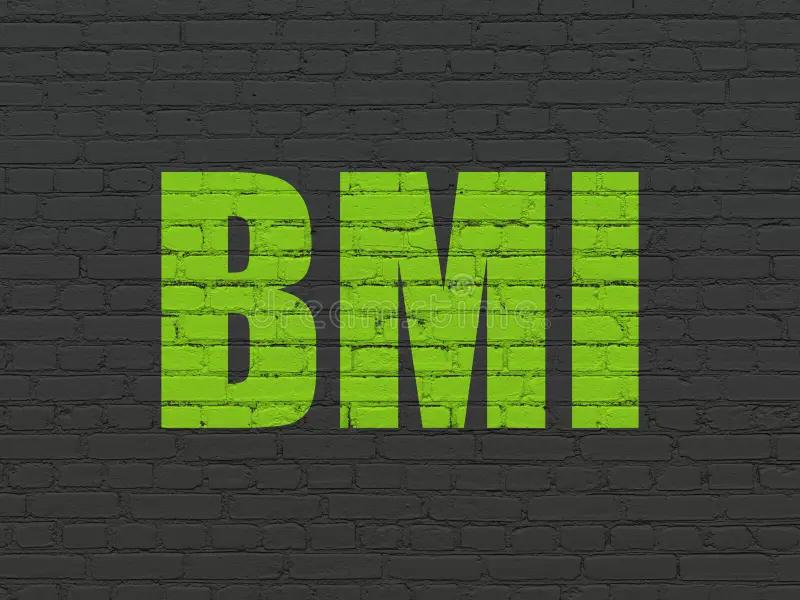

BMI Information

BMI: Body Mass Index is a measurement that compares your weight to your height...
Formula: BMI = weight (kg) / (height (m) * height (m)).
Importance:
- It provides a quick screening tool for weight categories that may lead to health problems.
- A high BMI can indicate higher body fat...
- A low BMI can also signal potential health risks...
- While BMI does not directly measure body fat...
Categories:
- Underweight: BMI < 18.5
- Normal weight: BMI 18.5 – 24.9
- Overweight: BMI 25 – 29.9
- Obesity: BMI ≥ 30
Understanding your BMI can help you make informed decisions about your health...
Continue to Calculate BMI for Men